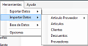

|
Importacion
|
Anterior Inicio Siguiente |
1. Dentro de la pantalla principal debemos seleccionardentro de la
barra de herramientas.
2. Elegimos el modelo de datos que deseamos importar a la base de datos.
3. Se abrirá una nueva ventana donde debemos indicar el archivo “.xls” a exportar. Usted puede elegir ingresarlo manualmente o dar clic en el
botón para buscarlo gráficamente. Dentro de esta ventana, se visualizará en el título de
la ventana el modelo a importar.
ACLARACIÓN: Los modelos de los archivos de importación los puede obtener a
partir de la exportación o solicitarlos al proveedor del software.